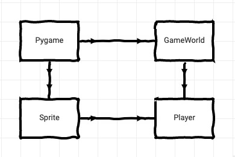

Pygame objektorientiert
Entgegen meiner ursprünglichen Absicht – ich wollte ja eigentlich mit Twine in mein Wunderland abtauchen – habe ich mich heute doch noch einmal hingesetzt und mit Pygame gespielt. Denn letzte Nacht im Halbschlaf erinnerte ich mich daran, daß es ja meine ursprüngliche Absicht war, den Pizzaflieger in und mit einem sauberen, objektorientierten Framework zu implementieren und das war in der Begeisterung über das bisher erreichte völlig untergegangen.
Die Inspiration für diese Idee lieferte Greenfoot, eine ausbildungsorientierte Spiele-Entwicklungsumgebung, die durch eine konsequente Objektorientierung hervorsticht1. So in etwa sollte dann auch mein Pygame-Framework aussehen.
Dazu habe ich erst einmal ein auf das Wesentliche reduzierte Pygame-Grundgerüst entwickelt:
import pygame
from pygame.locals import *
import os, sys
from random import randint
# Hier wird der Pfad zum Verzeichnis der Assets gesetzt
DATAPATH = os.path.join(os.getcwd(), "data")
# Konstanten deklarieren
WIDTH, HEIGHT = 640, 480
TITLE = "🐍 Pygame Boilerplate 🐍"
FPS = 60
# Farben
BG_COLOR = (231, 229, 226) # Sandgrau
# Pygame und das Fenster initialisieren
clock = pygame.time.Clock()
pygame.init()
# Ein übler Hack, um die Position des Fensters
# auf meinen zweiten Bildschirm zu setzen
os.environ['SDL_VIDEO_WINDOW_POS'] = "%d,%d" % (1320, 60)
screen = pygame.display.set_mode((WIDTH, HEIGHT))
pygame.display.set_caption(TITLE)
# Hauptschleife
keep_going = True
while keep_going:
clock.tick(FPS)
for event in pygame.event.get():
if ((event.type == pygame.QUIT)
or (event.type == pygame.KEYDOWN
and event.key == pygame.K_ESCAPE)):
keep_going = False
print("Bye, Bye, Baby!")
pygame.quit()
sys.exit()
screen.fill(BG_COLOR)
pygame.display.flip()Das ist zwar lauffähig (und war bisher auch meine Vorlage), aber von der gewünschten Objektorientierung noch weit entfernt. Mir schwebte da so etwas wie in diesem Diagramm vor:

Von Pygame abgeleitet wird die Spielewelt (class GameWorld()) und in dieser leben die Objekte, wie zum Beispiel der Player(). Diese Objekte sind wiederum Unterklassen der class Sprite(), die wiederum zu Pygame als Oberklasse gehört.
Also habe ich erst einmal die GameWorld() impementiert:
class GameWorld:
def __init__ (self):
# Initialisiert die Spielewelt
pygame.init()
# Ein übler Hack, um die Position des Fensters
# auf meinen zweiten Bildschirm zu setzen
os.environ['SDL_VIDEO_WINDOW_POS'] = "%d,%d" % (1320, 60)
self.screen = pygame.display.set_mode((WIDTH, HEIGHT))
pygame.display.set_caption(TITLE)
self.clock = pygame.time.Clock()
self.keep_going = True
def reset(self):
# Neustart oder Status zurücksetzen
# Hier werden alle Elemente der GameWorld initialisiert
self.all_sprites = pygame.sprite.Group()
self.player = Player()
self.all_sprites.add(self.player)
self.run()
def run(self):
# Hauptschleife des Spiels
while self.keep_going:
self.clock.tick(FPS)
self.events()
self.update()
self.draw()
def events(self):
for event in pygame.event.get():
if ((event.type == pygame.QUIT)
or (event.type == pygame.KEYDOWN
and event.key == pygame.K_ESCAPE)):
keep_going = False
self.game_over()
def update(self):
self.all_sprites.update()
def draw(self):
self.screen.fill(BG_COLOR)
self.all_sprites.draw(self.screen)
pygame.display.flip()
def start_screen(self):
pass
def win_screen(self):
pass
def loose_screen(self):
pass
def game_over(self):
print("Bye, Bye, Baby!")
pygame.quit()
sys.exit()Die gesamte Initialisierung von Pygame wird jetzt im Konstruktor der GameWorld() vorgenommen und ist vom Rest des Programms isoliert. Auch die Eventbehandlung habe ich in die einzelnen Klassen verlagert, das Hauptprogramm weiß nichts mehr davon.
Die Befehle der Methode reset() könnten theoretisch auch im Konstruktor stehen. Ich habe sie jedoch separiert, da sie unter Umständen bei einem Neustart des Spieles (ohne daß das Spiel beendet wird) noch einmal aufgerufen werden müssen. Und die run()-Methode faßt einfach nur die Methoden events(), update() und draw() in einem Aufruf zusammen.
Auch die Aufrufe in game_over() sind in eine eigene Methode ausgelagert, da sie – wenn ein Spiel an mehreren Stellen beendet werden kann – ebenfalls mehrmals benötigt werden könnten.
Die Methoden start_screen(), win_screen() und loose_screen() habe ich leergelassen. Sie können bei Bedarf implementiert werden.
Um das alles mit Leben zu füllen, habe ich als minimale, aber notwendige Ergänzung die Klasse Player() implementiert (denn was ist ein Spiel ohne Spieler?):
class Player(pygame.sprite.Sprite):
def __init__(self):
pygame.sprite.Sprite.__init__(self)
# Load Images
self.images = []
for i in range (2):
img = pygame.image.load(os.path.join(DATAPATH,
"planegreen_" + str(i) + ".png")) \
.convert_alpha()
self.images.append(img)
self.image = self.images[0]
self.rect = self.image.get_rect()
self.x = 75
self.y = 250
self.frame = 0
self.animation_cycle = 20
self.animation_time = 4
self.updown = 5
def update(self):
keys = pygame.key.get_pressed()
if keys[pygame.K_UP]:
if self.y > 20:
self.y -= self.updown
elif keys[pygame.K_DOWN]:
if self.y < HEIGHT - 20:
self.y += self.updown
else:
self.y += 0
self.rect.center = (self.x, self.y)
self.animation_cycle += 1
if self.animation_cycle >= self.animation_time:
self.animation_cycle = 0
self.frame += 1
if self.frame > 1:
self.frame = 0
self.image = self.images[self.frame]Auch hier fällt auf, daß ich in der update()-Methode die Event-Behandlung vom übrigen Programm isoliert habe. Die Events, die den Player betreffen, werden in der Klasse Player() behandelt – und sonst nirgendwo. Das Hauptprogramm ist daher entsprechend knapp ausgefallen:
import pygame
from pygame.locals import *
import os, sys
from random import randint
# Hier wird der Pfad zum Verzeichnis der Assets gesetzt
DATAPATH = os.path.join(os.getcwd(), "data")
# Konstanten deklarieren
WIDTH, HEIGHT = 640, 480
TITLE = "Pizzaplane Objektorientiert"
FPS = 60
# Farben
BG_COLOR = (0, 80, 125) # Mittelblau
### Hier kommen die Klassen-Definitonen hin
# Snip
### Ende der Klassendefinitionen
# Hauptprogramm
w = GameWorld()
w.start_screen()
w.reset()
w.run()Damit bin ich sehr zufrieden. Es entspricht meinen Vorstellungen eines objektorientierten Spieleframeworks. Jetzt muß ich »nur« noch testen, wie es sich in der Praxis bewährt. Dazu werde ich als erstes mein Pizzaplane-Spiel darauf anwenden. Schaun wir mal…
Den Quellcode und die Assets gibt es wie immer auch in meinem GitHub-Repositorium.
Fußnoten
Eigentlich wundert das nicht, denn Greenfoot ist ein Java-Framework, und in Java muß man sich schon gewaltig anstrengen, um der Objektorientierung zu entgehen. Daß dies jedoch nicht ganz unmöglich ist, beweist aber Processing. 🤓↩︎